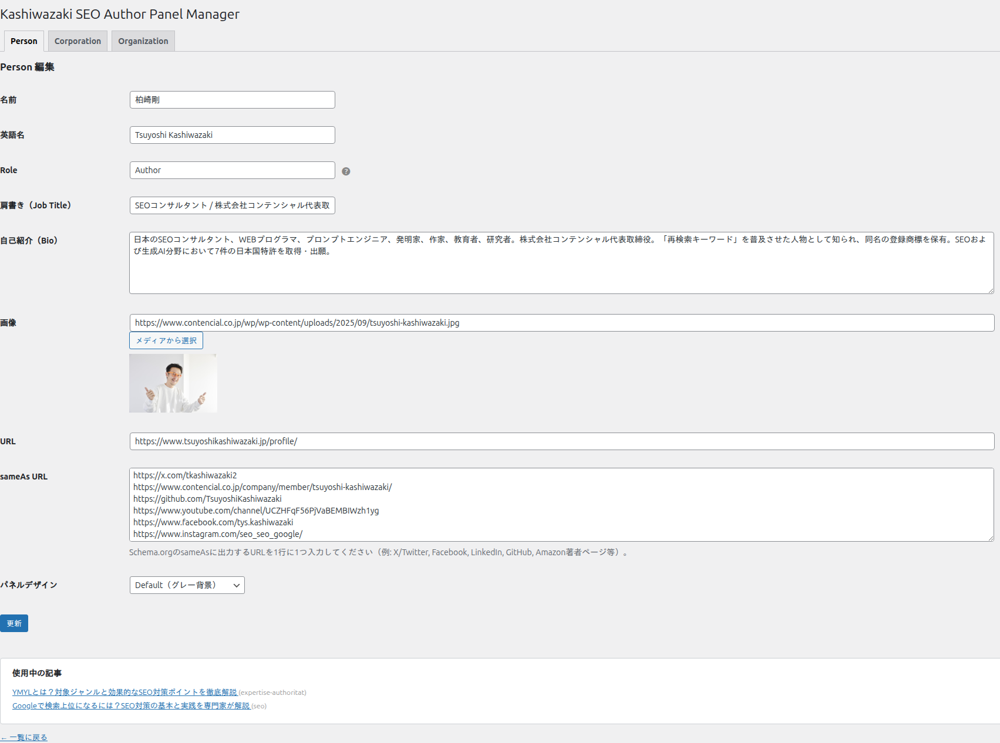
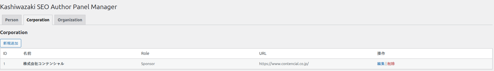
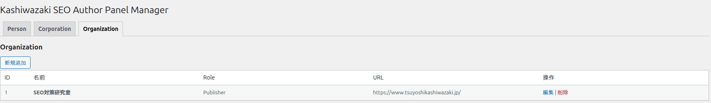

エンティティ管理
Person（個人）／ Corporation（企業）／ Organization（組織）の 3 種類のエンティティを、独立した 3 テーブルで管理します。各タブで全フィールドを個別に登録・編集・削除できます。
本プラグインの管理画面は admin.php?page=kapm に配置され、上部のナビゲーションタブで 3 つのエンティティ種別を切り替えます。デフォルトは Person タブで、URL クエリ &tab=corporation / &tab=organization で切り替わります。エンティティはすべて独立したカスタムテーブルに保存され、WordPress ユーザーとは関連付きません。
管理画面の共通操作
WordPress 管理画面の左サイドバーから 「Kashiwazaki SEO Author Panel Manager」（dashicons-id-alt アイコン）をクリックします。
上部の Person / Corporation / Organization タブをクリックして、管理したいエンティティ種別を選択します。
一覧画面の 「新規追加」 ボタンから登録画面を開き、各フィールドを入力して保存します。既存エンティティは 「編集」 リンクから修正できます。
削除は一覧の 「削除」 リンクから行います。削除操作には JavaScript の confirm() ダイアログが表示され、さらにサーバー側で nonce 検証が行われます。

3 種のエンティティは別テーブルに保存されます（{prefix}apm_persons / {prefix}apm_corporations / {prefix}apm_organizations）。テーブルはプラグイン有効化時に dbDelta() で作成され、インデックスは PRIMARY KEY (id) のみです。詳細な DB スキーマは トラブルシューティングの DB スキーマ表を参照してください。
Person（個人）タブ
Person タブは、記事の執筆者・レビュアー・編集者など「個人」を登録するためのタブです。ここで登録したエンティティはブロックエディタや [author_panel] ショートコードから Person の ID で参照され、Schema.org の Person 型 JSON-LD として出力されます。

Person の全フィールド（9 項目）
Person 登録フォーム（admin/views/person-form.php）の全フィールドと、対応する DB カラム・型・既定値・未入力時の挙動を以下にまとめます。
| UI 表示名 | 内部キー (POST / DB) |
DB 型 | 必須 | 既定値 | 入力形式 | 未入力時の挙動 |
|---|---|---|---|---|---|---|
| 名前 | name |
varchar(255) NOT NULL |
必須 | '' |
1 行テキスト | HTML の required 属性でブラウザ側バリデーション。サーバー側は sanitize_text_field() で無害化のみ。 |
| 英語名 | name_en |
varchar(255) NOT NULL |
任意 | '' |
1 行テキスト | 空の場合、JSON-LD の alternateName プロパティは出力されません。HTML パネルの (英語名) 表記も省略されます。 |
| Role | role |
varchar(255) NOT NULL |
任意 | 'Author' |
自由入力テキスト（ツールチップに推奨値一覧） | 本フィールドはセレクトではなく <input type="text"> です。未定義値は role_to_property() で author として扱われます（後述マッピング表参照）。 |
| 肩書き（Job Title） | job_title |
varchar(255) NOT NULL |
任意 | '' |
1 行テキスト | 空の場合、HTML パネルの肩書き行と JSON-LD の jobTitle プロパティは出力されません。 |
| 自己紹介（Bio） | bio |
text NOT NULL |
任意 | '' |
複数行テキスト（5 行表示） | 空の場合、HTML パネルの Bio 段落と JSON-LD の description は省略されます。サニタイズは sanitize_textarea_field()（改行は保持、HTML タグは除去）。 |
| 画像 | image_url |
varchar(2083) NOT NULL |
任意 | '' |
URL + メディアライブラリ選択ボタン | 空の場合、パネルの画像要素と JSON-LD の image（ImageObject）は出力されません。URL は esc_url_raw() で保存されます。 |
| URL | url |
varchar(2083) NOT NULL |
任意 | '' |
URL | 空の場合、名前がテキストのみ（リンクなし）になります。JSON-LD の url プロパティは省略され、@id 生成時のベース URL は home_url('/') にフォールバックします。 |
| sameAs URL | same_as |
text NOT NULL |
任意 | '' |
複数行テキスト（1 行 1 URL） | 1 行ずつ filter_var(FILTER_VALIDATE_URL) で検証され、通過したもののみ JSON-LD の sameAs 配列とフロントのアイコン表示に使われます。無効な行は静かにスキップされます。 |
| パネルデザイン | panel_style |
varchar(50) NOT NULL |
任意 | 'default' |
select（5 値固定） | 未指定時は default。選択肢は default／dark／accent／minimal／card の 5 種。後述「パネルデザイン」表を参照。 |
このほか、すべてのエンティティテーブルに id bigint(20) unsigned AUTO_INCREMENT（PRIMARY KEY）と created_at datetime DEFAULT CURRENT_TIMESTAMP が自動付与されます。ユーザーが入力するカラムではありません。
Person の Role フィールド推奨値
Role は自由入力テキストですが、ツールチップでは以下の 8 種類の値が推奨されています。ここに載っていない文字列を入れても保存は通りますが、Custom モードの JSON-LD 変換では未定義値として扱われます（既定の author にマップされる）。
| 推奨値 | 意味 | Custom モード時の Schema.org プロパティ |
|---|---|---|
Author（既定） | 記事の執筆者 | author |
Publisher | 記事の発行元・出版社 | publisher |
Editor | 記事の編集者 | editor |
Reviewer | 記事のレビュー・監修者 | reviewedBy |
Contributor | 寄稿者・協力者 | contributor |
Creator | コンテンツの作成者 | creator |
Sponsor | スポンサー・資金提供者 | sponsor |
Translator | 翻訳者 | translator |
Corporation（企業）タブ
Corporation タブは、記事の発行元や運営会社などの企業法人を登録するタブです。ここで登録したエンティティは Schema.org の Corporation 型として JSON-LD 出力されます。Corporation は Organization のサブタイプで、営利法人であることをより明示できます。

Corporation の全フィールド（8 項目）
Corporation のフォーム（admin/views/corporation-form.php）は Person から job_title / bio / image_url を取り除き、description（説明）と logo_url（ロゴ画像）に置き換えた構成になっています。
| UI 表示名 | 内部キー (POST / DB) |
DB 型 | 必須 | 既定値 | 入力形式 | 未入力時の挙動 |
|---|---|---|---|---|---|---|
| 名前 | name |
varchar(255) NOT NULL |
必須 | '' |
1 行テキスト | required によるブラウザバリデーション。JSON-LD の name プロパティへ出力されます。 |
| 英語名 | name_en |
varchar(255) NOT NULL |
任意 | '' |
1 行テキスト | 空の場合、JSON-LD の alternateName と HTML パネルの英語併記が省略されます。 |
| Role | role |
varchar(255) NOT NULL |
任意 | 'Publisher' |
自由入力テキスト | 既定は Publisher（Person と異なる点に注意）。Custom モード時、role_to_property() で Schema.org プロパティに変換されます。 |
| 説明（Description） | description |
text NOT NULL |
任意 | '' |
複数行テキスト（5 行表示） | 空の場合、HTML パネルの説明行と JSON-LD の description は出力されません。sanitize_textarea_field() で保存。 |
| URL | url |
varchar(2083) NOT NULL |
任意 | '' |
URL | 空の場合、名前はテキストのみ表示され、JSON-LD の url は省略されます。@id のベース URL は home_url('/')。 |
| ロゴ | logo_url |
varchar(2083) NOT NULL |
任意 | '' |
URL + メディアライブラリ選択ボタン | 空の場合、パネルのロゴ画像と JSON-LD の logo（ImageObject）は出力されません。 |
| sameAs URL | same_as |
text NOT NULL |
任意 | '' |
複数行テキスト（1 行 1 URL） | 1 行ずつ FILTER_VALIDATE_URL で検証し、通過行のみ JSON-LD の sameAs 配列へ出力されます。 |
| パネルデザイン | panel_style |
varchar(50) NOT NULL |
任意 | 'default' |
select（5 値固定） | 選択肢は Person と共通（default／dark／accent／minimal／card）。 |
Corporation の Role フィールド推奨値
Corporation/Organization のツールチップでは、記事発行元という主な用途に合わせて 5 種類のみを推奨しています。Person と同様、未定義値は author にマップされます。
| 推奨値 | 意味 | Custom モード時の Schema.org プロパティ |
|---|---|---|
Publisher（既定） | 記事の発行元・出版社 | publisher |
Author | 記事の執筆者（法人名義の場合） | author |
Sponsor | スポンサー・資金提供者 | sponsor |
Creator | コンテンツの作成者 | creator |
Contributor | 寄稿者・協力者 | contributor |
Organization（組織）タブ
Organization タブは、研究機関・業界団体・非営利組織・運営メディアなど、Corporation 以外の組織を登録するためのタブです。Schema.org の Organization 型として JSON-LD 出力されます。

Organization の全フィールド（8 項目）
Organization のフォーム（admin/views/organization-form.php）のカラム構成は Corporation と完全に同一ですが、独立した DB テーブル {prefix}apm_organizations に保存され、Schema.org の型も異なります。Corporation と混在させず、営利法人以外は必ず Organization タブで登録してください。
| UI 表示名 | 内部キー (POST / DB) |
DB 型 | 必須 | 既定値 | 入力形式 | Schema.org での出力型 |
|---|---|---|---|---|---|---|
| 名前 | name |
varchar(255) NOT NULL |
必須 | '' |
1 行テキスト | Organization.name |
| 英語名 | name_en |
varchar(255) NOT NULL |
任意 | '' |
1 行テキスト | Organization.alternateName |
| Role | role |
varchar(255) NOT NULL |
任意 | 'Publisher' |
自由入力テキスト | Custom モード時に role_to_property() でプロパティ変換 |
| 説明（Description） | description |
text NOT NULL |
任意 | '' |
複数行テキスト | Organization.description |
| URL | url |
varchar(2083) NOT NULL |
任意 | '' |
URL | Organization.url |
| ロゴ | logo_url |
varchar(2083) NOT NULL |
任意 | '' |
URL + メディアライブラリ | Organization.logo（ImageObject） |
| sameAs URL | same_as |
text NOT NULL |
任意 | '' |
複数行テキスト | Organization.sameAs（配列） |
| パネルデザイン | panel_style |
varchar(50) NOT NULL |
任意 | 'default' |
select | HTML パネルの CSS クラスに反映 |
一般的な営利企業（株式会社・合同会社等）は Corporation、学会・研究所・NPO・業界団体・運営メディア（ブランド名）などは Organization に登録してください。両者はテーブルも @id の接頭辞（#corporation-{id} / #organization-{id}）も分かれており、JSON-LD 上では別エンティティとして扱われます。
Role から Schema.org プロパティへの変換（role_to_property）
Custom モード（他プラグインの既存スキーマに著者情報を紐付ける出力方式）では、各エンティティの role フィールド値が class-shortcode.php の role_to_property() メソッドで Schema.org のプロパティ名に変換され、対象ノードに付与されます。対応表は以下のとおりです（大文字小文字は区別されません）。
| 入力 role 値（小文字化後） | 出力プロパティ名 |
|---|---|
author / writer | author |
publisher | publisher |
editor | editor |
reviewer | reviewedBy |
contributor | contributor |
creator | creator |
sponsor / funder | sponsor |
translator | translator |
| 上記以外（未定義値・空文字） | author（フォールバック） |
Standard モード（ページ本文の直後に独立 JSON-LD を出力する方式）では、@graph に Person / Corporation / Organization ノードを並べるだけで、Article 等への紐付けは行いません。そのため role_to_property() はショートコードの mode="custom" 時にのみ使われます。
パネルデザイン（panel_style）
各エンティティには HTML パネルの見た目を決める panel_style を個別設定できます。CSS は public/css/panel-style.css（実測 4,629 バイト）に定義されており、JavaScript は使用しません。
| value | CSS クラス | 見た目 | 用途の例 |
|---|---|---|---|
default（既定） |
.kapm-style-default |
背景 #f9f9f9、細ボーダー #e0e0e0、角丸 6px |
ほとんどのテーマに馴染む標準表示 |
dark |
.kapm-style-dark |
背景 #2b2d42、左アクセント #8ecae6、白系テキスト |
ダークテーマでの表示。コメントに WCAG AA 準拠（背景に対し全テキスト 4.5:1 以上）と明記されています |
accent |
.kapm-style-accent |
白背景、左端に 4px の #0073aa カラーバー、角丸なし |
本文と一体化しつつ左側に存在感を持たせたい場合 |
minimal |
.kapm-style-minimal |
背景・ボーダー・角丸なし。下線 #eee のみ |
装飾を極力排したい記事末尾の署名として |
card |
.kapm-style-card |
白背景、10px 角丸、シャドウ 0 2px 12px rgba(0,0,0,.08) |
浮き上がる「カード」として目立たせたい場合 |
パネルデザインは エンティティごとに保存されます。同じ記事に Person と Corporation を並べて、それぞれ異なるデザインを適用することもできます。
使用中の記事の確認
Person / Corporation / Organization の 編集画面下部に「使用中の記事」セクションが表示されます。そのエンティティを参照している投稿を自動検出して一覧表示する機能で、削除前の影響範囲確認に使えます。
実装は KAPM_Database::get_posts_using_entity() にあり、2 段階で記事を絞り込みます。
SQL LIKE で候補を抽出：wp_posts.post_content に "persons":" / "corporations":" / "organizations":" の文字列パターンを含む行を LIKE 検索します。post_status = 'publish' に限定されるため、下書き・非公開・予約投稿・ゴミ箱は検出されません。
parse_blocks() で正確に照合：候補記事ごとに parse_blocks() を実行し、kapm/author-panel ブロックの persons / corporations / organizations 属性を実際にパースして、対象 ID がカンマ区切りリスト内に存在するかを検証します。
この逆引きは Gutenberg ブロック経由の参照のみを対象とします。ショートコード [author_panel persons="..."] で参照している場合、ブロック属性の JSON 形式とはパターンが一致しないため 検出されません。また、公開済み（publish）以外の投稿ステータスも対象外です。
エンティティを削除する前に、必ず「使用中の記事」セクションを確認してください。削除された ID を参照しているブロックはフロント側で「表示するエンティティ無し」として空出力になります（エラー表示ではなく、パネル自体が消える）。
保存・削除処理のセキュリティ
3 つのエンティティすべてに対して、保存と削除のたびに nonce 検証と capability チェックが行われます。具体的なアクション名は以下のとおりです。
| 操作 | nonce アクション名 | nonce フィールド名 |
|---|---|---|
| Person 保存 | kapm_save_person | kapm_person_nonce |
| Person 削除 | kapm_delete_person | URL の _wpnonce |
| Corporation 保存 | kapm_save_corporation | kapm_corporation_nonce |
| Corporation 削除 | kapm_delete_corporation | URL の _wpnonce |
| Organization 保存 | kapm_save_organization | kapm_organization_nonce |
| Organization 削除 | kapm_delete_organization | URL の _wpnonce |
管理画面の表示と保存・削除は current_user_can('manage_options')（管理者権限）でガードされています。REST API は編集者以上（edit_posts）で参照可能です。詳細は トラブルシューティングの REST API 仕様を参照してください。
アンインストール時のデータ削除
WordPress 管理画面でプラグインを 削除すると、uninstall.php が実行され {prefix}apm_persons / {prefix}apm_corporations / {prefix}apm_organizations の 3 テーブルが DROP TABLE IF EXISTS により完全に消去されます。無効化（deactivate）では削除されませんが、削除（delete）は復元不可です。エンティティデータを保全する場合は事前に wp db export 等で必ずバックアップを取ってください。